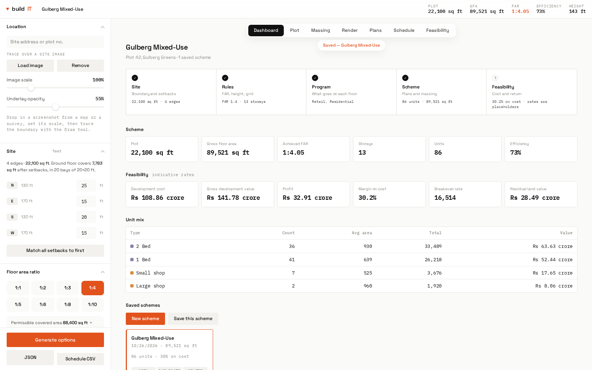
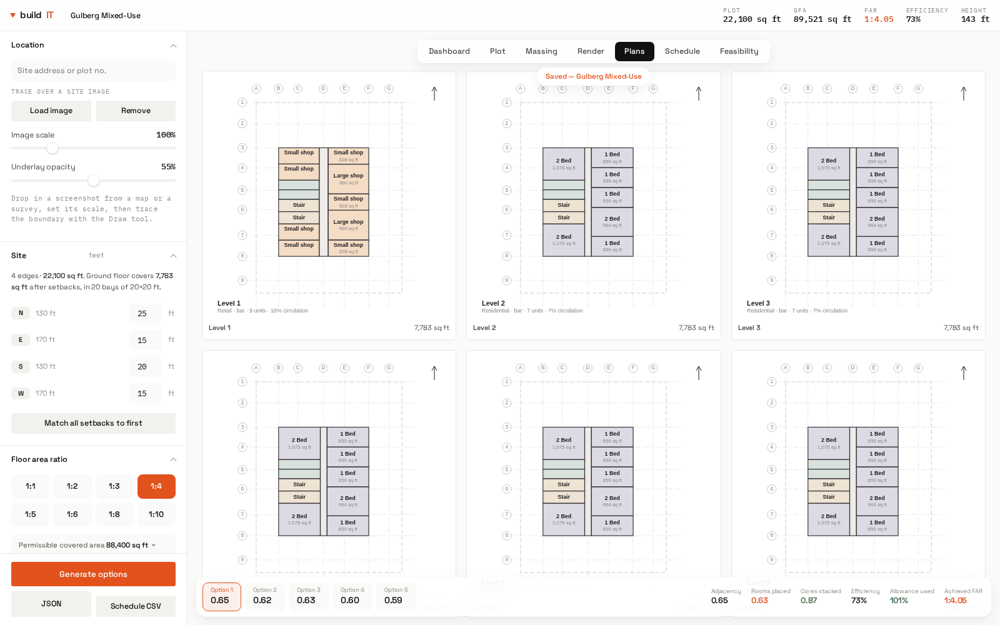
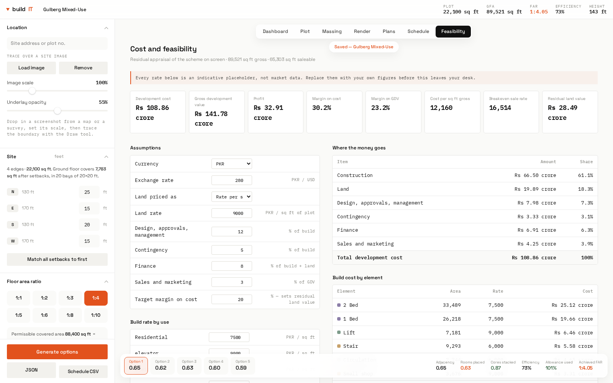

Site and bye-laws
Draw the boundary in feet or trace it over a map screenshot. Setbacks are per edge, so an irregular plot takes as many as it has sides. Click any dimension to type it exactly.
Draw the site in feet, set the bye-law setbacks edge by edge, pick a floor area ratio. buildIT solves a compliant envelope, lays out every storey down to the individual flat, schedules the areas and runs the development appraisal. No account, no server, no model to train.

Draw the boundary in feet or trace it over a map screenshot. Setbacks are per edge, so an irregular plot takes as many as it has sides. Click any dimension to type it exactly.
Pick an FAR ratio and the permissible area follows. A bay only counts as buildable when all four of its corners clear the setback, so nothing overhangs.
Units are cut by frontage along a corridor, not snapped to structural bays — so a one bed lands near its target area instead of being rounded up to the nearest 484 sq ft.
A live 3D model with the structural frame, slabs and a choice of facade styles and cladding materials. Roof terraces and courtyards read as landscape, not as holes.
Unit mix, core and services, and a level-by-level breakdown with net, gross and efficiency. Exports as CSV or JSON.
Build cost, land, fees, contingency and finance against the gross development value — with the breakeven sale rate and the residual land value, in PKR or USD.
A corridor is struck through the plate and the leftover depth becomes a band of units, cut by frontage along its length. The planner builds every typology the plate can carry and scores them against one another.

A residual appraisal built from the area schedule, so it always describes the scheme on screen. Every rate is editable in place.

The representation is adapted from Building-GAN (ICCV 2021), but the learned generator is replaced by a deterministic solver. Nothing is trained, nothing is inferred, and the same inputs always give the same building — which is what makes it arguable in front of a client.
Boundary and per-edge setbacks give the buildable envelope.
FAR, height limit and bay size set how many storeys fit.
What goes on each floor — shops at the base, flats above.
Corridor first, then units cut by frontage against it.
Cost, value and return read straight off the schedule.
A feasibility tool is only useful if you know where it stops. These are the things worth knowing before anything from buildIT goes in front of a client.
The default rates are chosen to be plausible, not researched against current tender prices or comparables. The method is a standard residual appraisal and the arithmetic is verified; the inputs are yours to supply. Replace them before an appraisal leaves your desk.
It is a sketch-stage feasibility and option-generation aid — not a documentation tool, and not a substitute for Revit or ArchiCAD. Columns, beams and slabs are drawn so the massing reads as a building; they carry no engineering meaning. Bye-laws cover setbacks and FAR only, with no fire egress, parking ratios or daylight-angle rules.